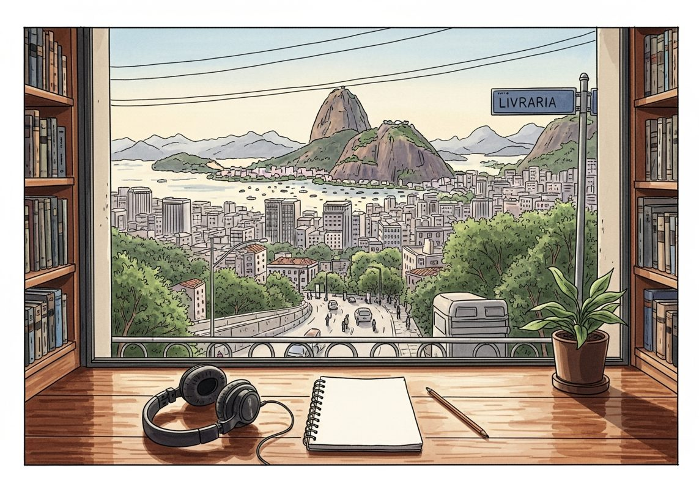

8/10

今日更新
#428 How Claude Shannon Worked
来源：Founders
原链接：
状态：已读完整音频 transcript
这期播客深入探讨了信息论之父克劳德·香农（Claude Shannon）独特的工作与生活哲学，揭示了天才并非仅凭好奇心，而是源于一种“建设性不满”和“好奇的严肃玩乐”精神。它为任何渴望提升创造力、解决复杂问题，或在工作中寻找更深层乐趣的中文读者提供了宝贵的洞见。
- 建设性不满：天才的驱动力：播客开篇即指出，伟大的洞见并非单纯源于好奇，而是来自一种“建设性不满”——一种当事物看起来不对劲时产生的轻微不适或“有用的烦躁”。香农本人就曾表示，他从巧妙解决工程问题、设计出用最少设备实现最大效果的电路中获得巨大乐趣。对他而言，看到实际成果带来的愉悦是无可替代的。这种对现状的不满足，促使他不断寻求更优雅、更高效的解决方案，而非仅仅满足于现有答案。这表明，真正的天才不仅享受解决问题的过程，更从智力应用的实际效果中获得深层满足，将这种“不满”转化为创新的动力。
- 香农的六大问题解决策略：香农提出了六项实用的问题解决策略。首先是“精简”，将复杂问题剥离无关数据，聚焦核心。其次是“借鉴已有答案”，通过研究类似问题的解决方案，找出共性，实现“巧妙的渐进式进步”，他认为分两次小跳比一次大跳更容易。第三是“重述问题”，改变措辞和视角，打破思维定势，避免沉没成本的束缚，这解释了为何新手有时能迅速解决问题。第四是“化整为零”，将大问题分解成小块，即使某些中间结果看似无用，也可能最终从“后门”找到解决方案。第五是“逆向思维”，如果无法从前提推导结论，就假设结论为真，反向推导前提。最后是“推广与抽象”，主动将自己的发现进行概括和推广，而不是等待他人来做。
- 信息时代的隐形建筑师：克劳德·香农：尽管克劳德·香农是历史上最重要的人物之一，被誉为“信息论之父”，但他的名字却鲜为人知。播客强调，我们今天所依赖的所有高速数据传输和高级信号处理技术，都源于香农在信息论方面的开创性工作。他通过构建自己的数字世界，奠定了我们当前数字文明的基础。播客引用的书籍《玩乐之心：克劳德·香农如何发明信息时代》（A Mind at Play: How Claude Shannon Invented the Information Age）由吉米·索尼（Jimmy Soni）和罗布·古德曼（Rob Goodman）合著，旨在揭示这位被历史低估的巨匠及其非凡的思维方式。
- 独特的人格与“好奇的严肃玩乐”哲学：香农拥有极其独特的人格。他“对科学潮流免疫，不受任何主题的任何意见影响”，是一个“闭门独思、长时间沉默”的人，总是在简朴的公寓和空旷的办公室里进行最佳思考。他的生活被定义为“好奇的严肃玩乐”，只专注于自己感兴趣的事物，从不区分工作与玩乐。他既是数字电路的先驱，也同样热衷于制作杂耍机器人或喷火小号等奇特发明。他相信机器最终会思考并超越人类。这种将工作视为玩乐的态度，让他能够自由探索，不受功利主义的束缚，最终创造出改变世界的理论。
- 独立思考与对外部世界的超然：香农的另一个显著特点是他对外部世界的超然态度。他从不争辩自己的想法，如果他人不相信，他便直接忽视。他既不屑于向他人解释自己，也不关心他人的看法。他偏爱独处，将职业社交降到最低，并且极度保密。他的论文鲜有合著者，这体现了他高度的独立性。他遵循自己的直觉，即使这意味着放弃更具声望的选择。这种“无所谓”的原则，是他职业生涯的核心，让他能够心无旁骛地追逐自己的兴趣，最终成就了信息论这一伟大突破，即便这让他成为一个不善于自我推销的“隐形天才”。
8 Predictions for the Era of Continual Learning
来源：Dwarkesh Podcast
原链接：https://www.dwarkesh.com/p/era-of-continual-learning
状态：未读全文：需要音频转写
材料不足：这期需要 transcript 或更完整正文后再做全篇摘要。
- 当前只有节目简介或网页正文；这是播客音频，必须获取 transcript 后才算读完整期。
Michael Ovitz, Co-founder of CAA
来源：David-Senra
原链接：https://www.davidsenra.com/episode/michael-ovitz-2
状态：已读完整音频 transcript
这期播客深入探讨了传奇经纪人迈克尔·奥维茨在AI时代如何保持其不竭的求知欲和极致的竞争精神，适合所有渴望在快速变化的商业环境中保持领先、寻求灵感并理解成功人士底层思维的创业者、管理者和终身学习者。
- 永不停止的学习与工作的热情：迈克尔·奥维茨，这位曾创立CAA的传奇人物，在年近八旬之际，依然保持着前所未有的忙碌和对工作的热爱。他将工作视为一种终极的刺激与乐趣，而非负担。他形容自己是“大脑的德古拉”，渴望从年轻、聪明的创业者那里汲取新知识和新思想，以此来拓展自己的思维边界。这种对学习和发现的无尽追求，是他保持活力和创造力的核心动力，也让他认为当前是他一生中最激动人心的时代，甚至超越了70年代末至90年代末的娱乐业黄金时期。他享受与这些充满活力的人才共事，每天都能从他们身上学到新东西，不断挑战自我。
- AI时代的颠覆性机遇：从专家到通才：奥维茨认为，AI的出现带来了前所未有的剧烈变革，其速度之快令人惊叹，甚至感到“恐惧”。他引用PayPal和Affirm创始人马克斯·列夫琴的观点，AI时代一天不工作就像错过了三个月。AI的巨大潜力远超其潜在风险。他举例说明，在癌症治疗研究中，AI能将原本需要5-10年的临床试验周期缩短至9个月，在视网膜神经刺激等领域也展现出惊人进展。更重要的是，AI让每个人都能从“专家”转变为“通才”。过去，人们必须专注于特定领域，而现在，他可以凭借AI的辅助，快速学习并涉足消费品、高科技、国防、医疗、生物制药等多个看似不相关的领域，成为一个“超能力”的通才。
- 商业的普适法则：核心要素不变：尽管奥维茨涉足的行业千差万别，但他坚信所有商业的底层逻辑和基本要素是共通的。无论是电影、电视节目、书籍、歌曲，还是科技初创公司，其“包装”过程都围绕着“人才/创造者/工程师”展开。这些人才需要有人协助执行，需要融资（电影需要制片资金，初创公司需要风险投资），需要分发渠道（电影发行，产品分销），需要市场营销来推广，最终目标都是实现盈利并建立一个能够超越创始人而长久存在的企业文化。他以CAA为例，这家公司成立于1974年，至今依然强大，证明了其建立的商业模式和价值观经受住了时间的考验。
- 项目选择的哲学：好奇心与人：奥维茨表示，他选择项目并非主动筛选，而是“项目选择了他”。他的决策主要基于对讲述者（无论是投资者、创始人还是风投）的兴趣程度，以及他自身强烈的好奇心。他自称“收藏艺术和人”，尤其喜欢结识聪明的人。对他而言，一个项目是否值得投入时间，首先要看它是否足够有趣，其次要评估其是否能经受住时间的考验，是否具备可构建性、可融资性以及可分发性。这些基本的商业考量，是他评估任何新想法的基石。他强调，他不会被任何标签所定义，更愿意保持一个“通才”的角色，而非被局限于某一特定领域。
- 拒绝标签：拥抱通才与竞争的本质：奥维茨明确表示，他拒绝被贴上任何标签，不愿被“定型”。他认为在当今世界，成为一个“通才”至关重要，这与他年轻时商业世界强调“专家”的模式截然不同。他将自己的成功归因于极致的竞争精神。他回忆起创立CAA时，被同行嘲笑“一年内就会失业”，但他用每周签下电影明星并在《综艺》杂志刊登整版广告的方式，连续十年向那些怀疑者证明了自己。他认同彼得·蒂尔“竞争是为失败者准备的”观点，认为真正的竞争是与自己赛跑，目标是“以最快、最干净、最简单、最残酷的方式击败竞争对手”，直到他们“看不清方向”。
历史精选
Holiday Special 2022
来源：Acquired
原链接：https://www.acquired.fm/episodes/holiday-special-2022
状态：已读网页 transcript
这期播客深入探讨了一个成功小众媒体的运营哲学、战略选择和发展历程，对于渴望理解内容创作、商业模式取舍以及媒体行业演变的企业家和创作者来说，是不可多得的真诚洞察。
- 2022年回顾：从泰勒·斯威夫特到索尼的深度探索：2022年对全球科技市场而言是疯狂的一年，但对Acquired播客来说却是丰收的一年。节目以泰勒·斯威夫特（Taylor Swift）的案例开篇，探讨了她作为“互联网摇滚明星”的现象级影响力。她的“时代巡演”门票需求量惊人，相当于900个体育场的容量，而实际演出仅50场。这引发了关于票价策略的讨论：是追求短期利润最大化（如每张1万美元的门票），还是为了长达50年的职业生涯而培养粉丝基础？主持人认为，互联网不仅让小众市场得以生存，也让最受欢迎的艺术家获得了前所未有的分发和触达能力，同时大大降低了获取信息的摩擦。随后，节目回顾了索尼（Sony）这一出乎意料的精彩案例。Ben最初对索尼的兴趣存疑，但最终发现其故事充满传奇色彩：从二战后日本的极端逆境中崛起，拥有天才创始人，业务多元化（五大业务单元营收和利润占比均达两位数），甚至在节目进行两小时后才提及PlayStation，足见其深度和广度。这期节目也引发了对未来“FANG”系列（如微软、苹果、谷歌）的讨论，以及如何平衡深度与听众疲劳度的思考。
- 科技巨头与AI浪潮：NVIDIA与ChatGPT的启示：NVIDIA的案例展示了创始人黄仁勋（Jensen Huang）三次“押注公司命运”的胆识。无论是9个月内推出显卡、押注可编程着色器，还是在市场成熟前七年投资AI和CUDA生态系统，这些大胆决策都最终获得了成功。节目深入探讨了AI的复兴，从DALI-2到最近的ChatGPT。主持人认为，ChatGPT最引人注目的变化在于其交互模式的转变（有状态的对话），而非仅仅是模型本身的巨大飞跃。Ben将其比作早期的“加密货币时刻”：人们对去中心化世界计算机的可能性感到兴奋，但具体应用场景尚不明确。同样，ChatGPT展现了惊人的能力，但其“杀手级应用”仍待发掘。Ben也借此分享了自己的产品哲学：倾向于构建能够完全概念化、边界清晰的“整洁盒子”式产品（如Acquired播客），而非需要大量外部协调的复杂项目（如Uber）。
- 零售业的变革者：沃尔玛与亚马逊的科技基因：在回顾亚马逊（Amazon）这一Acquired史上最受欢迎的剧集时，主持人强调了先理解沃尔玛（Walmart）的重要性。他们指出，现代零售业的本质是“折扣店”，而沃尔玛正是这一模式的开创者，彻底改变了美国零售业的面貌。David认为沃尔玛是美国第一家“应用科技公司”，通过技术改造了传统行业，尽管Ben对此“第一”的说法持保留意见，认为许多早期工业巨头也曾应用技术。但他们一致认为，沃尔玛通过技术（特别是供应链和分销协调）实现了前所未有的运营效率，从而能够提供更低的价格，吸引更多顾客，这使其成为一个真正由技术驱动的成功企业。这种对技术如何影响企业财务报表和竞争优势的分析，是Acquired节目的一贯特色。
- Acquired的独特策略：深度、信任与取舍：Benchmark的访谈被认为是Acquired的“理想范式”：先由主持人深入讲述公司故事，再邀请核心人物进行对话。这体现了Acquired独特的战略：通过投入大量时间进行研究，提供独一无二的视角，从而赢得嘉宾的信任。主持人引用迈克尔·波特（Michael Porter）的竞争战略理论，强调“战略即取舍”。Acquired的取舍包括：仅由两人运营、不频繁发布内容、制作超长剧集、不拓展播客网络、不外包销售。这些选择虽然可能带来一些“劣势”（如难以登上排行榜），但却能最大化“优势”（如深度研究、建立信任、与赞助商建立深厚关系）。Ben承认自己对节目质量的“吹毛求疵”，而David也随着年龄和为人父母的经历，越来越认同并拥抱这种“取舍”哲学，甚至形成了“太多事都太难了”的“不值得做”清单。
- 现场活动与赞助模式：产品质量与关系构建：2022年Acquired尝试了多场现场活动，包括“竞技场秀”、在葡萄牙与Solana的合作、TCV的LP节目以及Benchmark晚宴等。这些活动虽然带来了“难以置信的酷炫体验”和与听众面对面交流的“隐藏价值”，但主持人也坦承，它们通常需要付出10到20倍的努力，且事后对播客听众而言，产品质量往往不如常规录音室节目（如音质、观众注意力分散等）。因此，他们计划未来更审慎地选择现场活动，可能每年只举办一场“超级碗”级别的盛会，而将更多精力投入到与合作伙伴和赞助商的非节目形式的深度互动中。在赞助模式上，Acquired也坚持其“取舍”原则：只进行为期六个月的季度赞助，对赞助商的选择极其挑剔，并由主持人亲自与赞助商的CEO沟通，而非通过代理机构。这种模式旨在与“世界上最有价值的听众”和“最优秀的公司”建立深厚、真实的合作关系。
Jack Henry: VMS King - [Business Breakdowns, EP.206]
来源：Business Breakdowns
原链接：https://joincolossus.com/episode/vms-king/
状态：已读完整音频 transcript
本期播客深入剖析了Jack Henry这家为中小型银行提供核心运营软件的垂直市场软件（VMS）公司，揭示了其在行业整合浪潮中逆势增长的秘诀：以客户和员工为中心的独特文化、持续的有机创新以及对核心业务的专注，对于寻求长期价值投资和理解卓越企业运营模式的中文读者极具启发。
- Jack Henry：中西部小镇走出的银行科技巨头：Jack Henry是一家市值约120亿美元的金融科技公司，专注于为资产规模约10亿美元的中小型银行和信用社提供核心运营软件及全套技术解决方案。与硅谷的科技公司不同，它诞生于密苏里州莫内特（Monett）这个仅有1万人口的小镇，并至今仍在此运营。该公司被Constellation Software的Mark Leonard誉为“黄金标准”，自1985年上市以来，股价已上涨480倍，展现了惊人的长期复合增长能力。Jack Henry提供的软件是银行的“心脏和肺”，涵盖存款、贷款、总账等核心处理，以及支付、欺诈管理、数字银行等约300种补充解决方案。其73%的客户选择在Jack Henry的私有云环境中托管服务，体现了其作为外包技术伙伴的价值。
- 以客户和员工为中心的独特文化：Jack Henry最与众不同之处在于其深植于中西部的独特企业文化。公司名片上印着“做正确的事，多走一英里，享受乐趣”，这不仅是口号，更是其运营的指导原则。他们坚信“照顾好员工，员工就会照顾好客户，最终股东也会受益”。公司员工敬业度极高，客户满意度常年保持在4.7-4.8分（满分5分），远超竞争对手Fiserv和FIS。Jack Henry公开客户满意度、员工敬业度，并发布六个月的客户路线图，完成率接近90%，展现了极高的透明度和责任感。这种文化使得客户流失率极低，例如在32年间，仅流失了15家信用社客户，客户留存率超过99%。
- 有机增长与战略性收购并举的业务模式：Jack Henry的业务大致分为三部分，各占约三分之一：核心处理、支付解决方案和补充解决方案。核心处理是吸引客户的“钩子”，以资产规模和账户数量收费，有机增长率在中个位数。支付业务（借记卡、信用卡、银行间支付等）按交易量收费，增长强劲，达到高个位数甚至两位数。补充解决方案则围绕核心提供约50种产品。值得注意的是，Jack Henry的核心处理系统（银行和信用社各一套）主要通过有机开发，每年将14-15%的收入投入研发，确保系统现代化。而支付和补充解决方案则通过战略性收购来丰富产品线，如收购Banno以增强数字银行能力。这种模式确保了核心技术的领先性，同时通过收购快速拓展周边服务。
- 应对行业整合与技术变革的策略：尽管美国银行业持续整合，银行数量减少，但这并未对Jack Henry造成负面影响。因为他们主要按账户数量和交易量收费，而银行资产和电子支付交易量持续增长。Jack Henry的客户通常是被收购方，但由于其卓越的技术和服务，往往能取代收购方的原有系统。公司每年赢得约50个新的核心系统客户，主要来自寻求更换服务商的现有银行，而非新成立的银行。客户更换核心系统如同“心脏手术”，耗时12-18个月，因此一旦选择Jack Henry，客户粘性极高。在技术方面，Jack Henry已将73%的客户迁移到私有云，这不仅为客户提供了更好的安全性和管理便利，也为公司带来了约两倍的合同收入增长。未来5-10年，他们计划向公共云和模块化核心系统发展，以适应更大客户的需求并进一步提升服务效率。
- 开放生态与竞争格局：Jack Henry采取开放API策略，积极与金融科技公司合作，甚至邀请竞争对手参加客户日活动，确保客户获得最佳解决方案。这与一些竞争对手“必须使用我们”的心态形成鲜明对比。在竞争方面，Jack Henry在信用社市场占有近50%的份额，在银行市场占有约25%的份额，仍有增长空间。其主要竞争对手Fiserv和FIS拥有更多通过收购而来的老旧核心系统，维护成本高昂，研发投入分散。Jack Henry的专注和持续投入使其在技术和服务上保持领先。面对Stripe等金融科技公司的崛起，Jack Henry选择通过银行帮助其客户获取更多小企业客户，而非直接与银行客户竞争，体现了其“不与客户竞争”的原则。